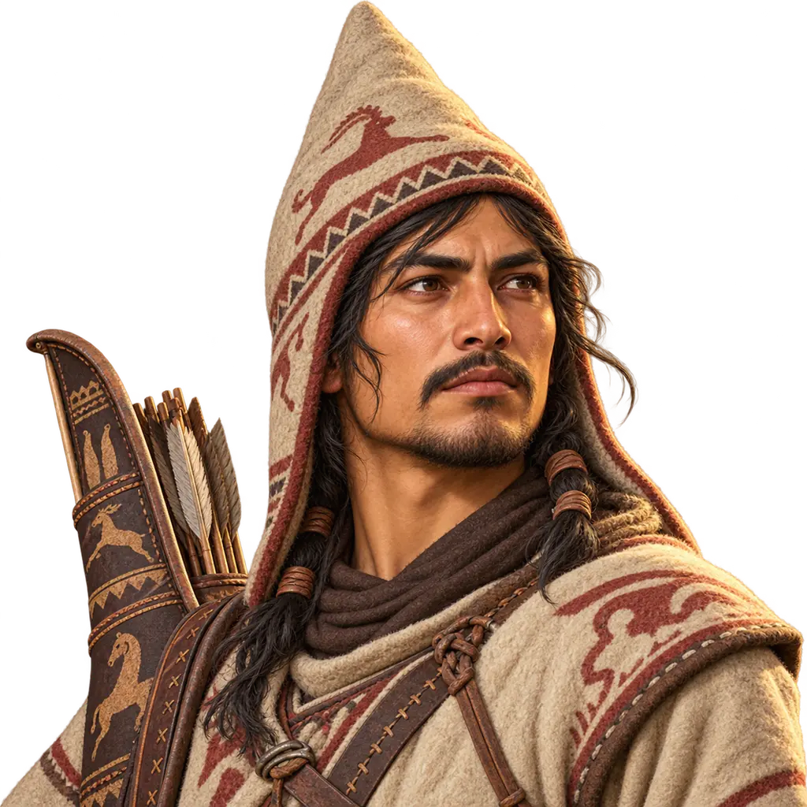
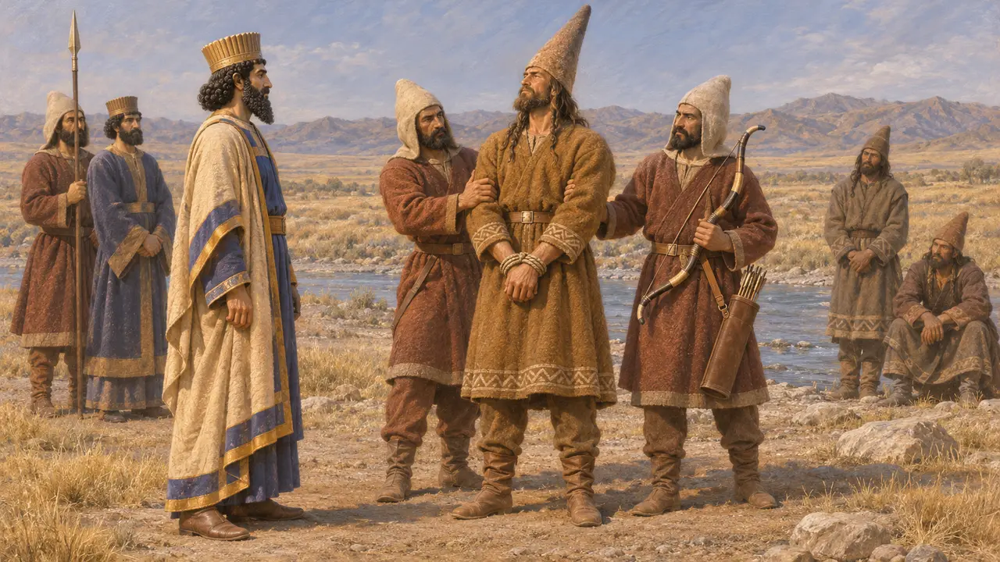
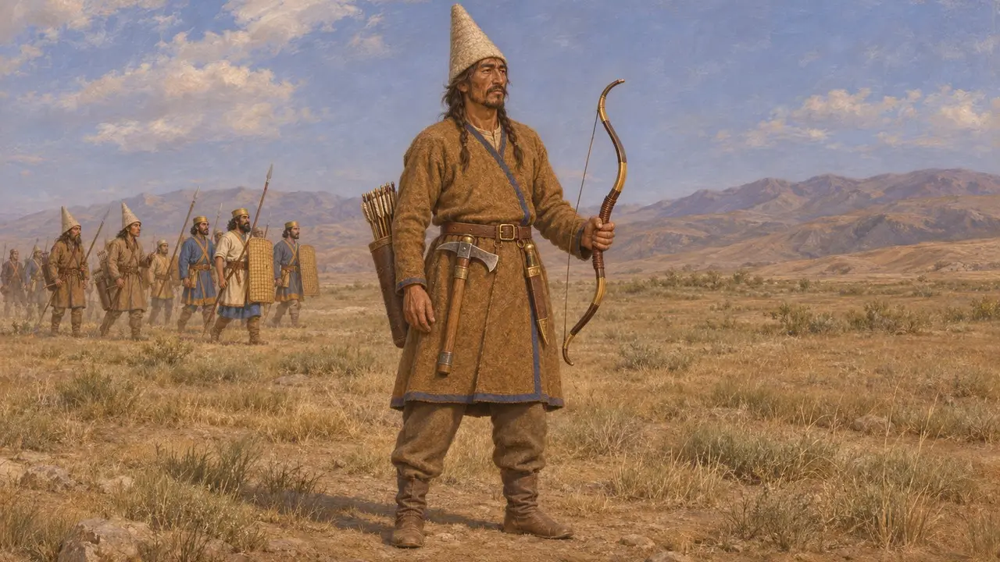
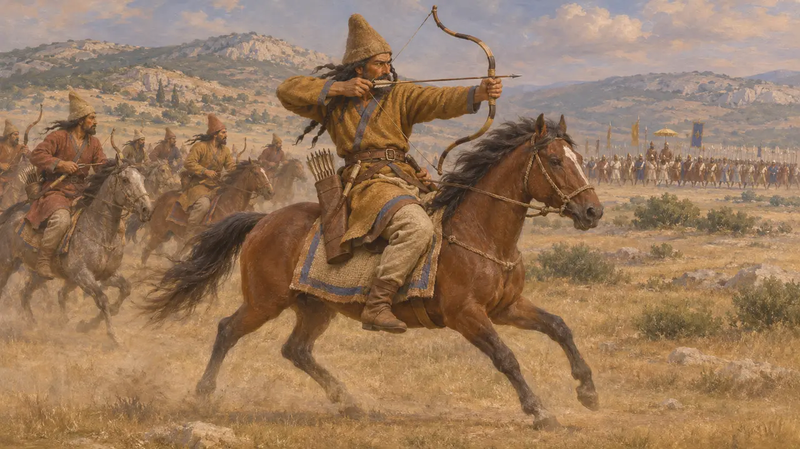
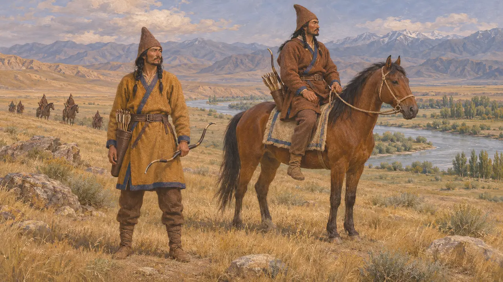
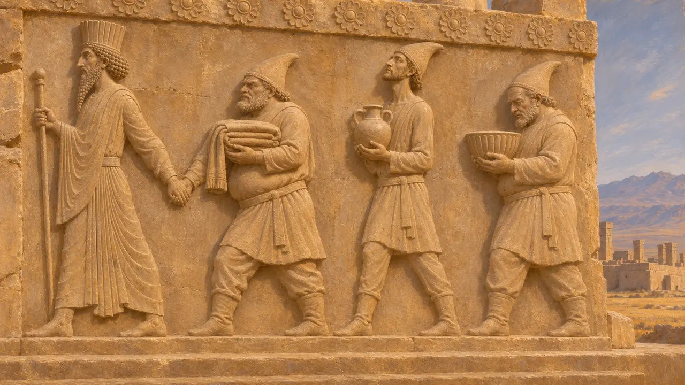

Enzyklopädie › Soldaten und Schiffe

Sakischer Bogenschütze
Bogenschütze der Saka-Völker Zentralasiens im achämenidischen Heer, um 520–479 v. Chr.
Im Spiel: Level 1: Das Grab des Gründers
Die Saken waren iranischsprachige Völker der zentralasiatischen Steppen und Gebirge. Vermutlich brachte sie zuerst Kyros unter persische Herrschaft, und Dareios zog gegen eine ihrer Gruppen zu Felde. Persische Inschriften zählen sie zu den Ländern des Königs, und Herodot rechnet die sakischen Truppen bei Marathon und Plataiai zu den besten des königlichen Heeres.
Im Spiel: Das Spiel stellt den Sakischen Bogenschützen hinter die Speerträger. Er schießt schneller und hält mehr aus als ein persischer Bogenschütze, hat aber eine etwas geringere Reichweite. Keine antike Quelle stützt diese Vergleiche, und viele Saken kämpften zu Pferd.

Die Saken in den Inschriften des Königs
Zeitgenössisch belegtDareios zählt die Saken zu den Ländern, die ihm zu Beginn seiner Herrschaft gehorchten. Seine Grabinschrift in Naqsch-e Rostam nennt getrennte Gruppen: die Hauma trinkenden Saken, die Saken mit der Spitzmütze und die Saken jenseits des Meeres. Die fünfte Kolumne der Behistun-Inschrift berichtet von einem Feldzug gegen die Saken mit der Spitzmütze, wahrscheinlich um 519, und von der Gefangennahme ihres Anführers Skunkha, dessen Gestalt mit hoher Mütze dem Relief nachträglich hinzugefügt wurde.
DB §6; DB §74; DNa §3

Mütze, Bogen und Axt
Antiker BerichtHerodot schildert die Saken im Heer des Xerxes im Jahr 480: Sie trugen hohe, steife Spitzmützen und Hosen. Er berichtet, sie hätten ihre eigenen einheimischen Bogen, Dolche und die Streitaxt namens Sagaris geführt. Zudem merkt er an, die Perser hätten alle Skythen Saken genannt, und die Saken seien gemeinsam mit den Baktrern unter Hystaspes marschiert, einem Sohn des Dareios und der Atossa.
Herodotus 7.64

Sakische Truppen in den Griechenkriegen
Antiker BerichtHerodot berichtet, Perser und Saken hätten bei Marathon 490 das Zentrum gehalten und dort die athenische Linie durchbrochen, bevor die griechischen Flügel sie umschlossen. Er erwähnt sakische Krieger, die als Seesoldaten auf den Schiffen des Königs dienten, und sagt, Mardonios habe Saken unter den Truppen ausgewählt, die er in Griechenland zurückbehielt. Bei Plataiai 479 hält er die Saken für die besten Reiter auf der Seite des Königs.
Herodotus 6.113; 7.184; 8.113; 9.71

Zu Fuß oder zu Pferd und wo sie lebten
UmstrittenHerodot führt die Saken beim Fußvolk des Xerxes auf, schreibt später aber von sakischen Reitern, und Steppenvölker gelten gemeinhin als berittene Bogenschützen. Historiker streiten darüber, wie viele Saken zu Fuß kämpften und ob jene in persischen Diensten aus ihrer Heimat oder aus Siedlungen anderswo im Reich stammten. Auch die Heimatgebiete der einzelnen benannten Sakengruppen, vom Syrdarja bis zum Pamir oder darüber hinaus, sind umstritten.
P. Briant, From Cyrus to Alexander, 2002

Saken auf den königlichen Monumenten
Zeitgenössisch belegtDie Reliefs des Apadana von Persepolis zeigen eine Gesandtschaft spitzmütziger Saken, die dem König Geschenke bringt. An den Königsgräbern von Naqsch-e Rostam stemmen Figuren der unterworfenen Völker den Thron des Königs empor. Am Grab des Dareios benennen kurze Beischriften jeden Träger, darunter die drei Gruppen der Saken, die in ihrer unverwechselbaren Tracht dargestellt sind.
E. F. Schmidt, Persepolis I, 1953; E. F. Schmidt, Persepolis III, 1970; DNe
Quellen
- Herodotus, Histories 6.113, 7.64, 7.184, 8.113, 9.71
- Darius, Behistun inscription (DB) §6, §74
- Darius, Naqsh-e Rostam inscriptions (DNa, DNe)
- A. Kuhrt, The Persian Empire: A Corpus of Sources from the Achaemenid Period, 2007
- P. Briant, From Cyrus to Alexander, 2002
- E. F. Schmidt, Persepolis I, 1953, and Persepolis III, 1970